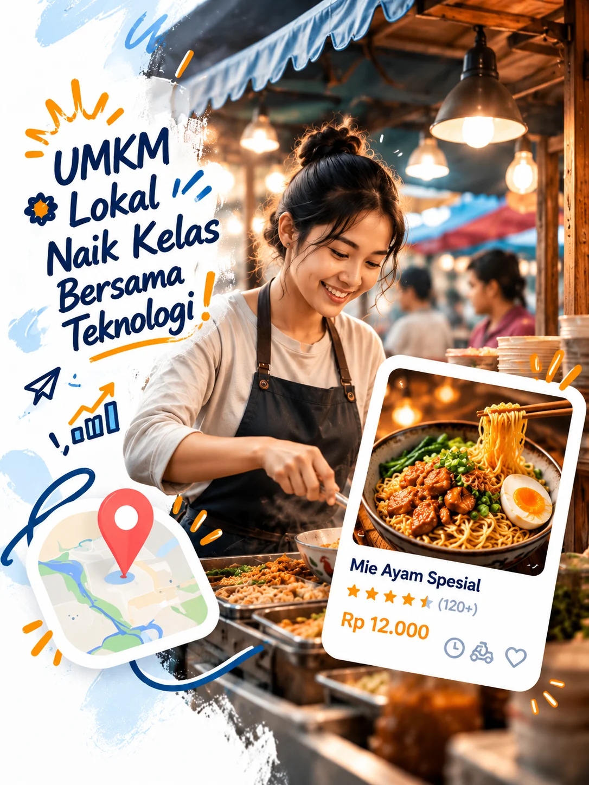
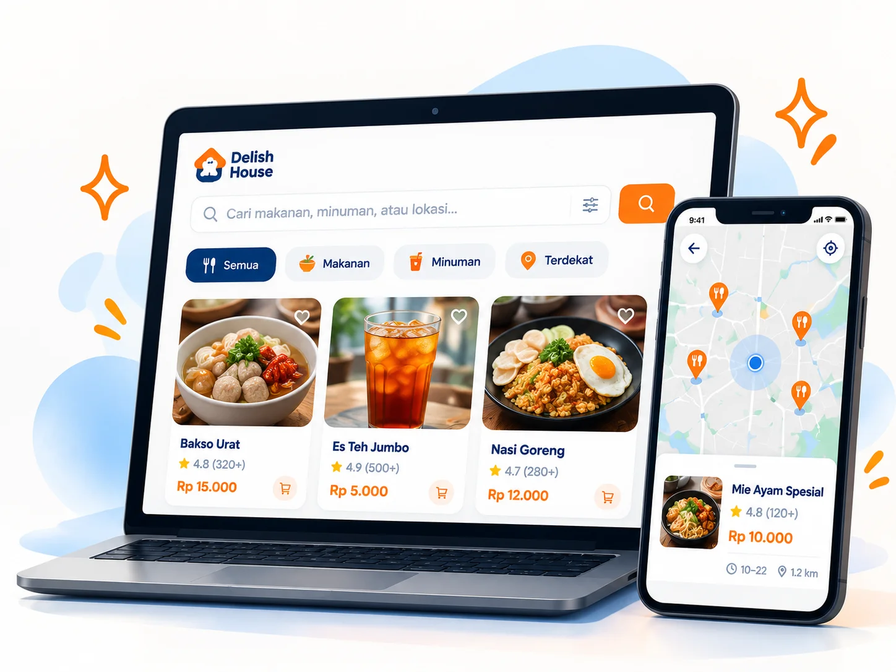
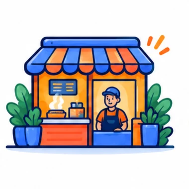

Dukung UMKM
Kuliner Lokal,
Lebih Dekat,
Lebih Mudah.
Delish House adalah platform web yang membantu pedagang UMKM mikro menampilkan produk kuliner mereka dengan mudah, dilengkapi AI untuk deskripsi produk, rekomendasi menu, peta lokasi, dan komunikasi langsung dengan pelanggan.
- Gratis untuk mulai
- Mudah digunakan
- Dibuat untuk UMKM

Banyak UMKM Kuliner Hebat,
Tapi Masih Sulit Ditemukan
Banyak pedagang kuliner mikro memiliki produk yang lezat, namun terkendala promosi, informasi yang tidak terstruktur, dan terbatasnya jangkauan pelanggan.
Promosi Terbatas
Banyak UMKM masih mengandalkan promosi dari mulut ke mulut.
Informasi Tidak Lengkap
Foto, menu, harga, dan lokasi belum tersaji dengan jelas.
Sulit Ditemukan
Pelanggan kesulitan mencari UMKM di sekitar lokasi mereka.
Komunikasi Terpisah
Pembeli dan pedagang harus berkomunikasi melalui banyak media.
Delish House
Platform UMKM Kuliner
Berbasis AI
Kami menghadirkan platform web yang sederhana, modern, dan mudah digunakan untuk membantu pedagang kuliner mikro memperkenalkan produknya, menjangkau lebih banyak pelanggan, serta memanfaatkan teknologi AI untuk berkembang.

Semua yang UMKM Kuliner Butuhkan,
Dalam Satu Platform
Profil Usaha
Daftarkan usaha, unggah foto produk, aturlah menu, harga, dan lokasi dengan mudah.
AI Copywriter
Buat deskripsi produk yang menarik dan profesional secara otomatis dengan AI.
Rekomendasi Menu
AI membantu pelanggan menemukan menu sesuai selera, anggaran, dan lokasi mereka.
Peta Lokasi
Tampilkan lokasi usaha di peta interaktif, mudah ditemukan pelanggan terdekat.
Direct Chat
Terhubung langsung dengan pelanggan melalui chat ke CS pedagang.
Mudah Digunakan, Dalam 3 Langkah Saja

Daftarkan Usaha
Buat profil usaha dan unggah produk kulinermu.
Optimalkan dengan AI
Gunakan AI untuk membuat deskripsi produk yang menarik.
Jangkau Lebih Banyak Pelanggan
Produkmu lebih mudah ditemukan dan pelanggan bisa langsung chat.